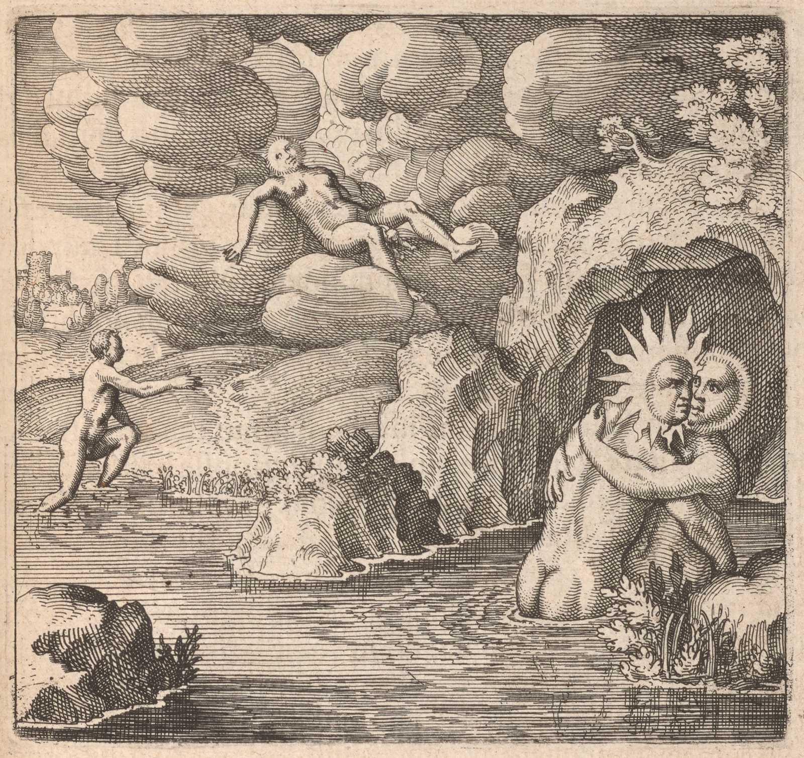

145
Embleme Emblem 34. Of the Secrets of Nature. Hee He is conceived in baths, and borne born in the aire air, and being made red walks upon the waters.
EmblemeEmblem 34. Of the Secrets of Nature.
HeeHe is conceived in baths, and borneborn in the aireair, and being made
red walks upon the waters.

Epigramme Epigram 34.
Sol is in baths conceiv'd conceived, produc'd produced ith' in the aire air,
And growing red treads water without fear:
Hee He, the Philosophers Supreme delight,
Is on the tops of mountains tinged white;
This guift gift of God's is a Stone, and yet not soe so,
Hee He happy is that shall attaine attain thereto.
Epigramma XXXIV.
Balnea conceptu pueri, natalibus aër
Splendet et hinc rubeus sub pede cernit aquas.
Fitque super montana cacumina candidus ille,
Qui remanet doctis unica cura viris.
Est lapis et non es, coeli quod nobile Donum,
Dante Deo foeli, si quis habebit, erit.
XXXIV. Epigrammatis Latini versio Germanica.
Im Wasserbad geschehn ist sein Empfängnuß / aber in Lüfften
Ist er geborn / und roht geht uber die Wasserklüfften /
Er wirt auch weiß in der Höhe der Berg / so der Weisen allein
Angenemmer und einig Herz enluft pfleget zusenn /
Es ist ein Stein / und auch nicht / welch himmlisch und edle Gaben /
Gelücklich ist / so jemand auß Gotts Geschenck wirt haben.
Epigramme Epigram 34.
Sol is in baths conceiv'd conceived, produc'd produced ith' in the aire air,
And growing red treads water without fear:
Hee He, the Philosophers Supreme delight,
Is on the tops of mountains tinged white;
This guift gift of God's is a Stone, and yet not soe so,
Hee He happy is that shall attaine attain thereto.
146
e34-01Hominum opinion vel adulatio quibusdam prae reliquis mirabiles ortus, at certe fabulosos attribuit, veluti, Alexandro
Magno, non a Philippo Macedonũm rege, sed Jove Hammonio, genito, Romulo et Remo, a Marte, Plato ex virgine Perictione ex
Apollinis opressa phantasmate, nato. e34-02Ita Ethnici a diis se oriundos
demonstrare voluerunt, quemadmodum et Thessalus Hippocratis
medici filius sese ab Apolline ortum ducere Atheniensibus inter alia persuadere conatur: e34-03Sed nos illis non creduli, qui scimus, illos nec
homines nec deos fuisse, ad quos sui generis originem referunt; e34-04Et si
heroës quasi divini iner mortales extitissent, ex adulatione subditorum, discipulorum vel aliorum omnia sua magnifica mundo venditantium, haec de iss ficta et in opinionem vulgi falsariis scriptis insinuata esse, animadvertimus: e34-05Alia res est, quod Philosophi suo filio
conceptionem et nativitatem inusitatãm tribuant: Habet enim hic
quid peculiare prae caeteris omnibus in mũndo natis, cum conceptio
ejus facta sit in balneis et ortus in aëre. e34-06Scimus mulieres steriles ex
nimia frigiditate et siccitate multũm adjuvari posse balneis calidis, ut
ad conceptum reddantur habiles et aptae, at quod is in balneis fieri
debeat, aut factus sit inauditum: Soli huic illud competere videtur
ob mirabilis naturae potentiam ab aliis longe diversam. e34-07Alibi dicunt
quod conceptio ejus fiat in fundo vasis et ortus in alembico: quae
sententia magis est conspicuae: Nam aquae balneorum, si quae adsunt, non in summitate, nec medio vasis sed in fundo erunt, in alembico vero vapores sunt aërii: e34-08Conceptio itaque ubi facta est, ascendit in alembicum et fit ortus ejus in albo colore: In fundo nigredo
dominatur, de qua Rosarius; e34-08Conceptio, inquit, est cum terra in nigrum solvitur pulverem et incipit aliquantulum de mercurio retinere; tunc enim agit masculus in foeminam, id est, azoth in terram.
e34-09Et paulo post: Conceptio et desponsatio fit in putredine in fundo
vasis et generatio genitorum fiet in aëre, scilicet in capite vasis, id est,
alembici: e34-10Estque conceptio in balneis nihil aliud nisi putrefactio in
in fimo: sic enim idem Rosarius coninuat: corpus nihil facit, nisi
putrefiat, et non potest putrefieri, nisi cum mercurio: e34-11Et mox pu
147
trefactio fiat igne lentissimo fimi calidi et humidi, et nequaquam
alio, ita quod nihil ascendat: quia si aliquid ascenderet, fieret separatio partium, quae fieri non debet, donec masculus et foemina sint
perfecte conjuncti, et unum recipit aliud, cujus signum est in superficie nigredo perfectae solutionis. e34-12Ortus ejus est albus, qui fit in cacumine montium, hoc est, in aëre seu alembico; Quod per Rosinum
ad Euthicam sic explicatur: Dixit sapiens. Accipite res e mineris
suis et exaltate eas ad altiora loca et mittite eas a cacumine montium suorum et reducite eas ad radices suas: e34-13Et post: Per montes autem significavit cucurbitas, et per cacumina montium alembica:
Mittere autem secundum similitudinem est recipere aquam illarum per alembicum in recipiente: Reducere vero super radices, est
super hoc, a quo prodeunt: et nominavit cucurbitas montes, quia in
montibus invenitur sol et luna: sic etiam in his montibus qui sunt
cucurbitae, generantur Sol et Luna eorum. e34-14Haec ille: Postea fi rubeus et incipit ire super aquas, hoc est super metalla in igne liquefacta,
quae stant instar aquae mercurialis: Est enim hic dominus aquarum,
in quas imperium exercet, instar Neptuni estque rex maris et possessor montium. e34-15De Xerxe Persarum rege tradunt, quod expeditionem moturus in Graeciam legationem instituerit ad mare et montem Athum, ne sibi injuriam facerent, illud fluctuum, hic flammarũm
aestu, alias se poenam de utroque sumpturum esse. e34-16Verum surdis narrata est fabula, et mare aliquot ex ejus navibus submersit, Athos vero incendio non paucas perdidit. e34-17Hinc iratus rex, tanquam maris et
montium dominus, illi certum numerum plagarum infligi iussit,
montis vero magnam partem in mare abjecit: e34-18Sed haec magis audaciam, quam prudentiam tanti regis demonstrant: e34-19Hic, de quo
nobis sermo, omnes aquas ab obstaculis et immunditiis purgat non
edicto, sed facto, et libere per eas incedit, quas quoque (quod amplius est) congelat, ut currus sua duritie sustineant, quae antea tulere
naves: e34-20Ipse montes exaequat vallibus et flammas ignis non reformidat, ideoque quocuncque vult, ab Herculis columnis in ultimam
Indiae oram ad Dionysi columnas libere contendit.
146
Discourse 34.
The opinion or flattery of men attributes wonderfull wonderful births to some e03-01
persons above others, but certainly fabulous, as to Alexander the great,
begotten not by Philip King of Macedonia, but Jupiter Hammon; to
Romulus and Remus, by Mars; to Plato, borne born of the virgin Perictione
violated by the image of Apollo: soe so the Heathen would demonstrate
themselves to proceed from the Gods, as allso also Thessalus the Sonne Son of Hippocrates the Physitian Physician doth does amongst other things endeavour endeavor to perswade persuade
himselfe himself to descend from Apollo at Athens: but wee we cannot easily beleive believe
them, who know, that they were neither men nor Gods, to whome whom they
referre refer the originall original of their lineage: And if the Heroes were amongst
men as divine, wee we conceive all those magnificent actions boasted in
the world, through the adulation of Subjects, disciples, or others, were things
faigned feigned of them, and insinuated into the opinion of the vulgar by
forged writings: The thing is different, that the Philosophers ascribe an unusuall unsual conception and nativity to their Sonne Son; for hee he hath has something peculiar
above all other things borne born in the world, hee he being conceivd conceived in baths, and
borne born in the aire air. Wee We know that women being barren through overmuch
coldnesse coldness and siccity may be much helped by hott hot baths, soe so as to be made
able and fitt fit for conception, but that it should be done in baths is a thing
unheard of: that seems to appertaine appertain to him alone, by reason of the wonderfull wonderful power of nature farre far different from other things. they elswhere elsewhere say,
that hee he must be conceivd conceived in the bottome bottom of the vessell vessel, and borne born in the
Alembicke Alembic: which opinion is more conspicuous: For the waters of baths, if
there be any, will not be at the top, nor in the midle middle, but in the bottome bottom of
the vessell vessel, and in the Alembicke Alembic are airy vapours vapors: where therefore conception is made, hee he ascends into the Alembicke Alembic, and his birth appears in a
white colour color: Blacknesse Blackness rules in the bottome bottom, concerning which sayth says the
Rosary; Conception is, when the earth is dissolved into a blacke black pouder powder, and
begins to retaine retain somewhat of the Mercury; for then the male acts upon
the female, that is, Azoth upon the earth. And a little after: Conception
and desponsation is made in putrefaction in the bottome bottom of the vessell vessel,
and the generation of things generated will be made in the aire air, to witt wit,
in the head of the vessell vessel, that is, the Alembicke Alembic: And conception in
baths is nothing els else but putrefaction in dung: for soe so the same Rosary
continueth continues: The body dos does nothing, unlesse unless it be putrefyd putrified, and it cannot
be putrefyd putrefied, except with Mercury: And soone soon after: Putrefaction 147must
be effected with a most gentle heat of warme warm and moist dung, and by
noe no other thing, soe so that nothing ascend, because if any thing should
ascend, there would be a separation of the parts, which ought not to be,
till the male and female be perfectly joynd joined together, and one receive the other, the signe sign of which perfect solution is blacknesse blackness in
the superficies. His birth is white, which is consummated at the top
109
of mountains, that is, in the aire air or Alembicke Alembic; which is by Rosinus to
Euthicia thus explained: The wise man sayd said. Take things out of their
mynes mines, and exalt them to higher places, and send them from the top
of their mountains, and reduce them to their roots: And afterwards: But
by mountains hee he signifyd signified Cucurbits, and by the tops of mountains
Alembicks Alembic: and to send is according to similitude to receive the water
of them by an Alembicke Alembic in a Receiver: and to reduce to the roots, is to
that, from which they proceed: and hee he named Cucurbits mountains,
because Sol and Luna are found in mountains: soe so allso also in the mountains, which are Cucurbits, are their Sol and Luna generated: These
are his words: Afterwards hee he becomes red, and begins to goe go upon the
waters, that is, upon metalls metals melted by fire, which stand in the forme form
of a mercuriall mercurial water: For hee he is the lord of waters, upon which
hee he exerciseth exercises authority, as Neptune, and is the king of the Sea,
and the possessor of mountains. Of Xerxes King of Persia they
report, that being upon an expedition into Greece, hee he sent an
embassy to the Sea, and to the mountaine mountain Athos, that they would
doe do him noe no wrong, that by the force of waves, this of fire, otherwise that hee he would take revenge upon them both: But the tale
was told to them that were deafe deaf, and the Sea drowned some of his
ships, and Athos destroyd destroyed not a few by fire. Hereupon the King being angry, did, as lord fo the Sea and mountains, coḿand command a certaine certain number of stripes to be inflicted upon the first, and a great
part of the mountaine mountain hee he cast into the sea: but these things doe do
demonstrate the rashnesse rashness rather than the prudence of soe so great a
king: Hee He, of whome whom wee we speake speak, purgeth purges all waters from obstacles;
and impurityes impurities, not by edict, but fact, and freely passeth passes through them,
which allso also (which is more) hee he congealeth congeals, soe so as by their hardnesse hardness to
bear his chariots, in which ships sayld sailed before: Hee He makes mountains
æquall equal with vallyes valleys, and fears not the flames of fire, and therefore
goes freely wheresoever hee he please, from the pillars of Hercules in
the farthest parts of India, to the pillars of Dionysius . . . .
146
e34-01Hominum opinion vel adulatio quibusdam prae reliquis mirabiles ortus, at certe fabulosos attribuit, veluti, Alexandro
Magno, non a Philippo Macedonũm rege, sed Jove Hammonio, genito, Romulo et Remo, a Marte, Plato ex virgine Perictione ex
Apollinis opressa phantasmate, nato. e34-02Ita Ethnici a diis se oriundos
demonstrare voluerunt, quemadmodum et Thessalus Hippocratis
medici filius sese ab Apolline ortum ducere Atheniensibus inter alia persuadere conatur: e34-03Sed nos illis non creduli, qui scimus, illos nec
homines nec deos fuisse, ad quos sui generis originem referunt; e34-04Et si
heroës quasi divini iner mortales extitissent, ex adulatione subditorum, discipulorum vel aliorum omnia sua magnifica mundo venditantium, haec de iss ficta et in opinionem vulgi falsariis scriptis insinuata esse, animadvertimus: e34-05Alia res est, quod Philosophi suo filio
conceptionem et nativitatem inusitatãm tribuant: Habet enim hic
quid peculiare prae caeteris omnibus in mũndo natis, cum conceptio
ejus facta sit in balneis et ortus in aëre. e34-06Scimus mulieres steriles ex
nimia frigiditate et siccitate multũm adjuvari posse balneis calidis, ut
ad conceptum reddantur habiles et aptae, at quod is in balneis fieri
debeat, aut factus sit inauditum: Soli huic illud competere videtur
ob mirabilis naturae potentiam ab aliis longe diversam. e34-07Alibi dicunt
quod conceptio ejus fiat in fundo vasis et ortus in alembico: quae
sententia magis est conspicuae: Nam aquae balneorum, si quae adsunt, non in summitate, nec medio vasis sed in fundo erunt, in alembico vero vapores sunt aërii: e34-08Conceptio itaque ubi facta est, ascendit in alembicum et fit ortus ejus in albo colore: In fundo nigredo
dominatur, de qua Rosarius; e34-08Conceptio, inquit, est cum terra in nigrum solvitur pulverem et incipit aliquantulum de mercurio retinere; tunc enim agit masculus in foeminam, id est, azoth in terram.
e34-09Et paulo post: Conceptio et desponsatio fit in putredine in fundo
vasis et generatio genitorum fiet in aëre, scilicet in capite vasis, id est,
alembici: e34-10Estque conceptio in balneis nihil aliud nisi putrefactio in
in fimo: sic enim idem Rosarius coninuat: corpus nihil facit, nisi
putrefiat, et non potest putrefieri, nisi cum mercurio: e34-11Et mox pu
147
trefactio fiat igne lentissimo fimi calidi et humidi, et nequaquam
alio, ita quod nihil ascendat: quia si aliquid ascenderet, fieret separatio partium, quae fieri non debet, donec masculus et foemina sint
perfecte conjuncti, et unum recipit aliud, cujus signum est in superficie nigredo perfectae solutionis. e34-12Ortus ejus est albus, qui fit in cacumine montium, hoc est, in aëre seu alembico; Quod per Rosinum
ad Euthicam sic explicatur: Dixit sapiens. Accipite res e mineris
suis et exaltate eas ad altiora loca et mittite eas a cacumine montium suorum et reducite eas ad radices suas: e34-13Et post: Per montes autem significavit cucurbitas, et per cacumina montium alembica:
Mittere autem secundum similitudinem est recipere aquam illarum per alembicum in recipiente: Reducere vero super radices, est
super hoc, a quo prodeunt: et nominavit cucurbitas montes, quia in
montibus invenitur sol et luna: sic etiam in his montibus qui sunt
cucurbitae, generantur Sol et Luna eorum. e34-14Haec ille: Postea fi rubeus et incipit ire super aquas, hoc est super metalla in igne liquefacta,
quae stant instar aquae mercurialis: Est enim hic dominus aquarum,
in quas imperium exercet, instar Neptuni estque rex maris et possessor montium. e34-15De Xerxe Persarum rege tradunt, quod expeditionem moturus in Graeciam legationem instituerit ad mare et montem Athum, ne sibi injuriam facerent, illud fluctuum, hic flammarũm
aestu, alias se poenam de utroque sumpturum esse. e34-16Verum surdis narrata est fabula, et mare aliquot ex ejus navibus submersit, Athos vero incendio non paucas perdidit. e34-17Hinc iratus rex, tanquam maris et
montium dominus, illi certum numerum plagarum infligi iussit,
montis vero magnam partem in mare abjecit: e34-18Sed haec magis audaciam, quam prudentiam tanti regis demonstrant: e34-19Hic, de quo
nobis sermo, omnes aquas ab obstaculis et immunditiis purgat non
edicto, sed facto, et libere per eas incedit, quas quoque (quod amplius est) congelat, ut currus sua duritie sustineant, quae antea tulere
naves: e34-20Ipse montes exaequat vallibus et flammas ignis non reformidat, ideoque quocuncque vult, ab Herculis columnis in ultimam
Indiae oram ad Dionysi columnas libere contendit.